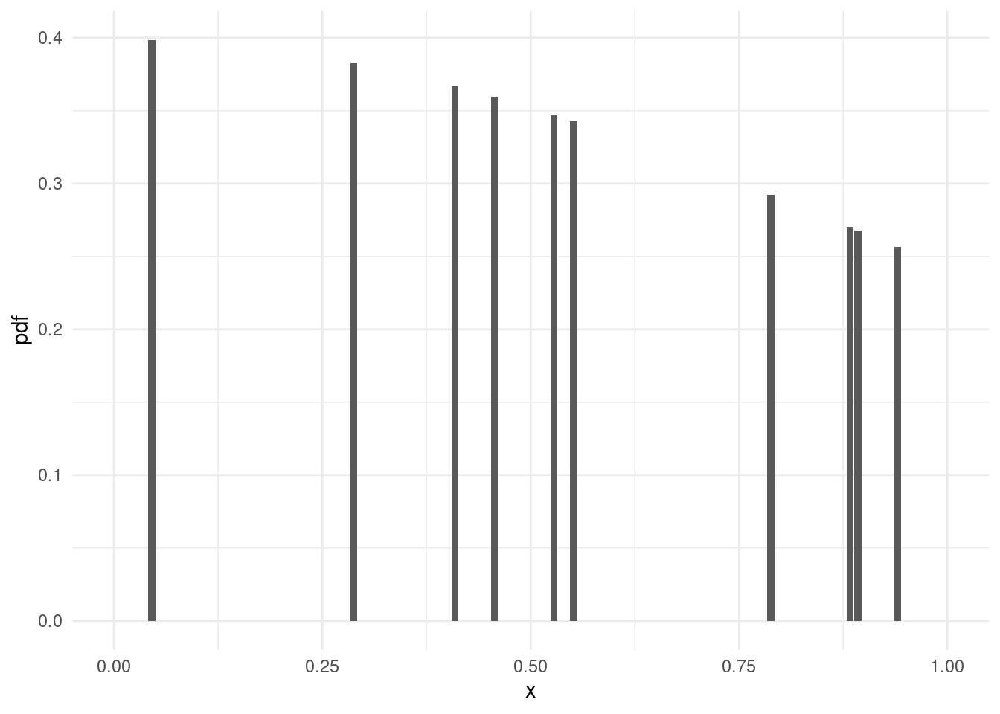

current_price <- 100
initial_price <- 80
holding_period <- 180 # Days
annualized_return <- (current_price / initial_price)^(365 / holding_period) - 1
annualized_return[1] 0.5722151 Statistics, the science of learning from data, is essential in decision-making and scientific inquiry. It involves collecting, analyzing, and interpreting data to measure and manage uncertainty. This discipline is crucial in validating research and ensuring conclusions are reliable. Central to statistics is probability theory, the foundation for managing uncertainty and randomness in data, which is especially vital in financial analytics. Here, statistics help model market behaviors, assess risks, and forecast trends using techniques like regression analysis, hypothesis testing, and time series analysis. Advanced financial analytics not only describe but also predict and optimize, using statistical models for risk management and algorithmic trading. The rise of big data and machine learning has further enhanced these models, enabling the detection of complex patterns in financial markets. Thus, statistics and probability theory are fundamental to financial decision-making, equipping practitioners with tools for mastering advanced financial analytics in a volatile world
Statistics, the science of learning from data, is essential in decision-making and scientific inquiry. It involves collecting, analyzing, and interpreting data to measure and manage uncertainty. This discipline is crucial in validating research and ensuring conclusions are reliable. Central to statistics is probability theory, the foundation for managing uncertainty and randomness in data, which is especially vital in financial analytics. Here, statistics help model market behaviors, assess risks, and forecast trends using techniques like regression analysis, hypothesis testing, and time series analysis. Advanced financial analytics not only describe but also predict and optimize, using statistical models for risk management and algorithmic trading. The rise of big data and machine learning has further enhanced these models, enabling the detection of complex patterns in financial markets. Thus, statistics and probability theory are fundamental to financial decision-making, equipping practitioners with tools for mastering advanced financial analytics in a volatile world
Statisticians, like artists, have the bad habit of falling in love with their models.
George Box emphasized the importance of viewing statistical modeling as an iterative process, where models are continually improved, scrutinized, and reassessed against new data to reach increasingly reliable inferences and decisions. This chapter delves into the iterative nature of statistics, inspired by George Box’s visionary perspective, and its relevance to financial modeling and decision-making.
At the heart of Box’s philosophy lies the acknowledgment that any statistical model is an approximation of reality. Due to measurement errors, sampling biases, misspecifications, or mere random fluctuations, even seemingly adequate models can fail. Accepting this imperfection calls for humility and constant vigilance, pushing statisticians to question their models and strive for improvement.
Box envisioned statistical modeling as an ongoing cycle, composed of consecutive stages of speculation, exploration, verification, and modification. During each iteration, new findings inspire adjusted mental models, eventually translating into altered analyses.

Figure fig-iter illustrates an iterative process in statistical modeling, particularly in the context of financial analysis. Here’s how we can relate it to George Box’s ideas:
Financial markets are inherently complex, dictated by intricate relationships and driven by manifold forces. Capturing this complexity requires an iterative approach, where models are consistently tested against emerging data and evolving circumstances.
Emphasizing the iterative aspect of financial modeling brings about several benefits:
Implementing an iterative strategy in financial modeling calls for conscious efforts to instill a culture of continuous improvement. The following practices can help embed iterative thinking into organizational norms:
George Box’s vision of statistics as an iterative process carries far-reaching ramifications for financial modeling and decision-making. By championing a perpetual pursuit of excellence, Box’s doctrine urges practitioners to abandon complacent acceptance of mediocre models in favor of persistent self-evaluation, reflection, and revision. Organizations embracing Box’s wisdom enjoy the spoils of sustained success, weathering adversity armed with the determination born of iterative resilience.
Scalar quantities are numerical values that don’t depend on direction, such as temperature, mass, or height. In finance, scalars often appear in the form of returns, exchange rates, or prices. As a real-world finance application, suppose you want to compute the annualized return of a stock.
current_price <- 100
initial_price <- 80
holding_period <- 180 # Days
annualized_return <- (current_price / initial_price)^(365 / holding_period) - 1
annualized_return[1] 0.5722151Vectors are arrays of numbers, and matrices are rectangular arrays. Both play a crucial role in expressing relationships between variables and performing computations efficiently. Consider a hypothetical scenario where you compare monthly returns across three different assets.
monthly_returns <- c(0.02, -0.01, 0.03)
asset_names <- c("Asset A", "Asset B", "Asset C")
returns_dataframe <- data.frame(Asset = asset_names, Return = monthly_returns)
returns_dataframe Asset Return
1 Asset A 0.02
2 Asset B -0.01
3 Asset C 0.03Functions map inputs to outputs and are ubiquitous in mathematics, statistics, and finance. Suppose you seek to calculate compound interest.
The provided code snippet is written in R, a programming language commonly used for statistical computing and graphics. It defines a function named compound_interest and then uses this function to calculate the final balance of an investment based on compound interest. Let’s break down the code to understand it better, particularly in the context of learning what a function is:
compound_interest <- function(principal, rate, periods) {
return_amount <- principal * (1 + rate)^periods
return_amount
}compound_interest <- function(principal, rate, periods) {...}: This line declares a new function named compound_interest. The function takes three arguments: principal, rate, and periods.
principal is the initial amount of money invested or borrowed.rate is the interest rate per period (for example, a yearly rate).periods is the total number of periods the interest is applied (e.g., number of years).return_amount <- principal * (1 + rate)^periods: This line calculates the amount of money after interest is applied for the specified periods. It follows the formula for compound interest.return_amount. initial_balance <- 5000
yearly_rate <- 0.04
years <- 5
final_balance <- compound_interest(initial_balance, yearly_rate, years * 12)
final_balance[1] 52598.14compound_interest is used to calculate the final balance of an investment.initial_balance <- 5000, yearly_rate <- 0.04, and years <- 5 set the initial parameters for the investment.final_balance <- compound_interest(initial_balance, yearly_rate, years * 12): This line calls the compound_interest function with the specified parameters. Note that years * 12 is used as the function expects the number of periods and in this case, we are considering monthly compounding over 5 years.final_balance: This line outputs the result stored in final_balance.In summary, this code is a practical example of defining and using a function in R. The compound_interest function encapsulates the logic for calculating compound interest, making it reusable and easier to manage. This is a fundamental aspect of learning programming, where functions are used to create modular, reusable code blocks.
Certainly! The provided code snippet in R is an example of using descriptive statistics to summarize and understand a dataset, in this case, a firm’s quarterly sales revenue. Let’s delve deeper into the concept of descriptive statistics and then interpret the R code:
Descriptive statistics involve summarizing and organizing data so it can be easily understood. These statistics provide a quick overview of the data, helping to understand its general properties without delving into complex statistical analyses. Key measures in descriptive statistics include:
sales_revenue <- c(25000, 27000, 26000, 28000, 30000)
sales_stats <- summary(sales_revenue)
sales_stats Min. 1st Qu. Median Mean 3rd Qu. Max.
25000 26000 27000 27200 28000 30000 sales_revenue <- c(25000, 27000, 26000, 28000, 30000): This line creates a vector sales_revenue containing the sales revenue figures. These could represent, for example, quarterly sales revenues for a year and an additional quarter.
sales_stats <- summary(sales_revenue): The summary() function in R is used to obtain a summary of the sales revenue data. This function provides a quick look at the basic descriptive statistics.
sales_stats: When this line is executed, it will display the output of the summary() function. The output typically includes:
The output from summary(sales_revenue) will help you understand the distribution and central tendency of the sales revenue data. For example, if the mean and median are close, the data is likely symmetrically distributed. If they differ significantly, it suggests skewness in the data. Quartiles give insight into the variability and possible outliers in the data set.
Probability theory offers a systematic approach to studying uncertain events and measuring uncertainty, serving as the cornerstone for much of statistical analysis. It provides a framework for quantifying the likelihood of events, ranging from the most mundane to the highly complex, and is essential for comprehending various statistical techniques used in data analysis.
This theory revolves around the concept of a ‘probability’, a measure that assigns a numerical value to the likelihood of an event occurring, ranging from 0 (impossibility) to 1 (certainty). These probabilities are fundamental to understanding and interpreting data in a wide range of disciplines, from finance and economics to the natural and social sciences.
In the context of statistics, probability theory is integral to the development and application of models that describe real-world phenomena. It underpins key statistical concepts such as random variables, probability distributions, expectation, variance, and covariance. These concepts are crucial for conducting hypothesis testing, estimating model parameters, and predicting future observations.
Furthermore, probability theory is vital in the assessment of risk and uncertainty. In fields such as finance, insurance, and economics, the ability to quantify risk using probabilistic models is crucial for making informed decisions. This includes evaluating the likelihood of financial losses, determining insurance premiums, and forecasting market trends under uncertainty.
In addition, probability theory lays the groundwork for advanced statistical techniques such as Bayesian inference, which incorporates prior knowledge into the statistical analysis, and stochastic modeling, used extensively in areas like financial modeling and risk assessment.
The role of probability in statistics is not just theoretical; it has practical implications in everyday data analysis. Whether it’s deciding the probability of a stock’s return over a certain threshold or assessing the risk of a new investment, probability theory is the tool that helps convert raw data into actionable insights.
As we delve deeper into this chapter, we will explore the fundamental principles of probability theory, its applications in various statistical methods, and its crucial role in making sense of uncertainty and variability in data. By gaining a solid understanding of probability theory, readers will be well-equipped to tackle complex data analysis tasks with confidence and precision.
A sample space \(\Omega\) is a set containing all conceivable outcomes of a random phenomenon. An event \(A\) is a subset of the sample space \(\Omega\); thus, \(A \subseteq \Omega\). The notation \(P(\cdot)\) indicates probability.
Given two events \(A\) and \(B\), the union operation \((A \cup B)\) corresponds to the set of outcomes contained in either \(A\) or \(B\) or both. The intersection operation \((A \cap B)\) is the set of outcomes that lie in both \(A\) and \(B\). The complement of an event \(A'\) refers to the set of outcomes in the sample space that are not in \(A\): \[\Omega = A \cup A'\quad,\quad A \cap A' = \emptyset\]
Conditional probability is the probability of an event \(A\) given that another event \(B\) occurs: \[P(A \mid B) = \frac{P(A \cap B)}{P(B)} \qquad (\text{assuming}\;\; P(B)>0)\]
For any two events \(A\) and \(B\), the joint probability satisfies the identity: \[P(A \cap B) = P(A)\times P(B \mid A) = P(B) \times P(A \mid B)\]
Given three events \(A\), \(B\), and \(C\), the chain rule decomposes the joint probability as follows: \[P(A \cap B \cap C) = P(A) \times P(B \mid A) \times P(C \mid A \cap B)\]
Bayes’ formula relates the conditional probabilities of two events, say \(A\) and \(B\), as follows: \[P(A \mid B) = \frac{P(B \mid A) \times P(A)}{P(B)}\]
Two events \(A\) and \(B\) are independent if and only if \[P(A \cap B) = P(A) \times P(B)\]
Independent events satisfy the following equality: \[P(A \mid B) = P(A) \qquad \text{and} \qquad P(B \mid A) = P(B)\]
A finite set \(\{A_1, A_2, \dots , A_n\}\) is a partition of the sample space if the following two conditions are satisfied:
Consider a partition of the sample space \(\{A_1, A_2, \dots , A_n\}\) and an arbitrary event \(B\). The total probability theorem states that: \[P(B) = \sum_{i=1}^{n} P(B \cap A_i) = \sum_{i=1}^{n} P(B \mid A_i) \times P(A_i)\]
Generalizations of Bayes’ theorem arise from the total probability theorem. Given a partition of the sample space \(\{A_1, A_2, \dots , A_n\}\) and an arbitrary event \(B\), the extended Bayes’ theorem reads: \[P(A_i \mid B) = \frac{P(B \mid A_i) \times P(A_i)}{\sum_{j=1}^{n} P(B \mid A_j) \times P(A_j)}, \quad \forall\; i \in \{1, 2, \dots, n\}\]
These concepts and relations form the backbone of probability theory, allowing us to perform calculations and make inferences based on the underlying structure of random phenomena. In the following sections, we explore more advanced tools and techniques, such as random variables, probability distributions, moments, and densities, which are essential for modeling financial and economic processes.
Assume the US produces 20 billion barrels of oil annually, exports 5 billion barrels, imports 2 billion barrels, and consumes the rest domestically. What percentage of domestic production does the US export?
domestic_production <- 20 - 2
export_percentage <- 5 / domestic_production * 100
export_percentage[1] 27.77778Two events are independent if the occurrence of one doesn’t affect the probability of the other. That is, P(A|B) = P(A) and P(B|A) = P(B). Equivalently, P(A ∩ B) = P(A) × P(B).
A random variable is a rule associating numerical values with outcomes in a sample space. There are two types of random variables: discrete and continuous.
For a discrete random variable, the PMF gives the probability of each value taken by the variable.
What is the probability of rolling a six-sided die twice and getting a sum equal to 7?
die_faces <- 6
combinations <- expand.grid(die1 = 1:die_faces, die2 = 1:die_faces)
desired_combinations <- combinations[(combinations$die1 + combinations$die2) == 7,]
probability <- nrow(desired_combinations) / (die_faces ^ 2)
probability[1] 0.1666667For a continuous random variable, the PDF gives the relative likelihood of the variable taking on any specific value within a defined region.
Generate 10 random values drawn from a uniform distribution between 0 and 1 and plot the PDF.
library(ggplot2)
set.seed(123)
random_values <- runif(10, 0, 1)
pdf_plot <- data.frame(x = random_values, pdf = dnorm(random_values))
ggplot(pdf_plot, aes(x = x, y = pdf)) +
geom_bar(stat = "identity") +
scale_x_continuous(limits = c(0, 1)) +
theme_minimal()
This section builds on the Fundamentals introduced in Section 1, providing a foundation in probability theory essential for understanding more advanced statistical techniques. Including examples and R code encourages interactive learning and promotes better retention. Move forward with Section 3, focusing on Statistical Inference, and remember to provide clear definitions, descriptions, and R code examples.
Probability theory offers a systematic approach to studying uncertain events and measuring uncertainty. Its foundational role in statistical analysis cannot be overstated, as it underpins the methods and techniques used to make sense of random phenomena and data. Understanding probability theory is essential not only for mastering statistical concepts but also for conducting robust and insightful data analysis in various fields.
Unlike many other branches of mathematics, probability theory is characterized by its lack of a single, unifying theory. This unique aspect stems from its historical development and the diverse applications it has found across different domains. Probability has evolved through contributions from mathematicians, philosophers, statisticians, and scientists, each bringing their perspective and influencing its theoretical foundations. As a result, probability theory encompasses a rich tapestry of approaches and interpretations.
There are two major schools of thought in probability theory: the frequentist and the Bayesian perspectives. The frequentist approach, which is the traditional form of probability, interprets probability as the long-run frequency of events occurring in repeated trials. It is grounded in the concept of an objective, empirical observation of frequencies. On the other hand, the Bayesian approach views probability as a measure of belief or certainty about the occurrence of an event, incorporating prior knowledge and subjective judgment into its framework.
This divergence in foundational understanding reflects the versatile and adaptable nature of probability theory. It allows for a range of methodologies and approaches tailored to the specific needs and nature of the problem at hand. In practice, this means that probability theory can be applied flexibly across disciplines – from the natural sciences, where it helps model inherent randomness, to the social sciences, where it captures the uncertainty in human behavior, and in finance and economics, where it aids in risk assessment and decision-making under uncertainty.
Moreover, the lack of a unifying theory in probability does not imply a weakness; rather, it highlights the field’s richness and its capacity to adapt and evolve. As we delve further into probability theory, we will explore these different interpretations and how they influence the application of statistical methods. We will examine how probability enables us to model complex, real-world situations with uncertainty and how it aids in the extraction of meaningful insights from data, despite and because of its diverse theoretical underpinnings.
In summary, the study of probability theory is a journey through a landscape filled with varied interpretations and methodologies, each providing valuable insights into the nature of uncertainty and randomness. This chapter aims to navigate this landscape, shedding light on the multifaceted nature of probability and its crucial role in data analysis.
Frequentism posits that probabilities correspond to the long-run frequencies of events in repeated trials. It concentrates on estimating the parameters of probability distributions governing the generation of data, instead of considering alternative hypotheses. Many commonly used statistical tests, such as t-tests and chi-square tests, stem from the Frequentist perspective.
In financial time series econometrics, frequentism dominates academic publication and discourse. This approach, which emphasises the analysis and interpretation of data through frequency-based probability, is central in scholarly research within this field. Frequentist methods, which revolve around estimating parameters based on observed frequencies, such as mean or variance, are extensively applied and featured in academic literature. These methods are favoured for their suitability in constructing models that make inferences or predictions about future data, particularly in large datasets typical in finance. This prevalence in academia contrasts with Bayesian methods, which, despite their practical utility, have a less prominent representation in scholarly publications. The dominance of frequentism in academic circles is reflective of its foundational role in the long-term analysis of financial data, where historical trends and patterns are crucial for understanding and forecasting economic phenomena.
Frequentism takes a long-run frequency perspective, asserting that probabilities are the relative frequencies of events obtained through repeated observations. This perspective became widely accepted in the nineteenth century thanks to British polymath John Venn and Austrian mathematician Johann Radon, among others. Sir Ronald Fisher, a renowned geneticist and statistician, championed Frequentism in the twentieth century, arguing that probability should solely deal with random variation in observations.
Reference:
Bayesian methods treat probabilities as degrees of belief concerning the truthfulness of propositions, conditioned on prior evidence. Bayesian inference combines prior knowledge with current evidence to update beliefs. This paradigm excels at capturing uncertainty in model parameters and accounts for complex interactions between variables.
In contrast, Bayesian inference in financial time series econometrics offers a different perspective, one that incorporates prior knowledge and beliefs into the analysis. This method involves updating the probability for a hypothesis as more evidence or information becomes available. In the context of financial markets, Bayesian approaches are particularly valuable for their adaptability and ability to handle uncertainty. They allow for the incorporation of both historical data and expert opinions, making them well-suited for dynamic and rapidly changing markets. Bayesian models can adjust more fluidly to new information, such as changes in market conditions or economic indicators, which is a critical advantage in finance. This flexibility enables more nuanced forecasting and risk assessment, especially in situations where data is limited or highly volatile. Consequently, while Bayesian methods may not dominate academic publications to the extent of frequentist approaches, they are increasingly recognised for their practical applications in financial analysis, especially in areas like portfolio optimization, risk management, and algorithmic trading, where real-time decision-making is crucial.
Lastly, Bayesian methods trace their roots to English cleric and mathematician Thomas Bayes, whose revolutionary work, “An Essay Towards Solving a Problem in the Doctrine of Chances” laid the groundwork for Bayesian inference. Bayesian methods were subsequently promoted by French scholar Pierre-Simon Laplace in the late eighteenth century and garnered renewed interest in the mid-twentieth century, largely owing to British statistician Harold Jeffreys and American statistician Leonard Savage.
Reference:
Classical probability theory also plays a significant role in financial time series econometrics, providing a fundamental framework for understanding and modelling uncertainty in financial markets. In this approach, probabilities are determined based on the assumption of equally likely outcomes, and this theory underpins many traditional financial models. Classical probability is particularly evident in the modelling of market events that can be approximated as random and independent, such as in the case of certain types of stock price movements or interest rate changes. It forms the basis for widely used financial concepts like the Efficient Market Hypothesis, which assumes that market prices reflect all available information and thus follow a random walk. Additionally, classical probability models are integral to the development of risk assessment tools such as Value at Risk (VaR), which estimates the potential loss in an investment, or portfolio, under normal market conditions over a set time period. These tools rely on the classical probability distribution of past market data to predict future risks. Despite the growing sophistication of statistical methods in finance, the clarity and simplicity of classical probability continue to make it a cornerstone in the field, especially for basic risk management and pricing models.
In conclusion, the interplay and overlaps between Classical Probability, Frequentism, and Bayesian methods contribute significantly to the richness and depth of financial analytics. This pluralistic approach not only fosters a more comprehensive understanding of probability and statistics but also drives innovation and adaptability in tackling complex financial challenges.
Definition of Probability: What is probability in the context of financial analysis, and why is it important?
Basic Statistical Measures: Describe mean, median, and mode. How are they used in financial data analysis?
Understanding Risk: What is the role of standard deviation in measuring risk in financial portfolios?
Simple Probability Models: How would you use a simple probability model to estimate the likelihood of a stock’s price increase?
Frequentist Approach Basics: What is the frequentist approach to probability, and how is it applied in finance?
Comparative Analysis of Probability Approaches: Compare and contrast the Bayesian and frequentist approaches in the context of predicting stock market trends.
Bayesian Inference in Market Analysis: How does Bayesian inference aid in updating market forecasts with new information?
Significance Testing in Finance: Discuss the importance and limitations of p-values in financial hypothesis testing.
Box’s Iterative Model: Explain George Box’s iterative approach to modeling in financial econometrics with examples.
Predictive Modeling in Finance: Discuss the role of predictive modeling in finance and the statistical techniques commonly used.
# Calculate the annualized return of a stock
initial_price <- 100
final_price <- 150
years <- 3
annualized_return <- (final_price / initial_price)^(1/years) - 1Calculate and interpret the annualized return of a stock over a three-year period.
# Summarize a dataset of stock prices
stock_prices <- c(120, 125, 130, 128, 135)
summary(stock_prices) Min. 1st Qu. Median Mean 3rd Qu. Max.
120.0 125.0 128.0 127.6 130.0 135.0 Summarize and interpret the descriptive statistics of a stock price dataset.
# Calculate standard deviation of stock returns
stock_returns <- c(0.05, 0.02, -0.03, 0.04, 0.01)
sd(stock_returns)[1] 0.03114482Calculate and interpret the standard deviation of stock returns.
# Calculate the probability of a fair coin landing heads
probability_heads <- 1 / 2Calculate and interpret the probability of an event in a financial context.
# Using a simple moving average for forecasting
stock_prices <- c(120, 122, 121, 123, 125)
forecast <- mean(tail(stock_prices, n=3))Use a simple moving average to forecast the next data point in a financial time series.
# Calculate Value at Risk (VaR) for a stock portfolio
portfolio_returns <- c(-0.05, 0.1, 0.03, -0.02, 0.04)
alpha <- 0.05
VaR <- quantile(portfolio_returns, alpha)Calculate and interpret Value at Risk for a portfolio.
# Perform a Bayesian update for stock price prediction
prior <- dbeta(1,1,1) # Uniform prior
likelihood <- dbinom(6, size=10, prob=0.5)
posterior <- prior * likelihoodUpdate the probability of a stock’s price increase using Bayesian inference.
# Test if a new strategy outperforms the market
strategy_returns <- c(0.07, 0.08, 0.09, 0.06, 0.1)
market_returns <- c(0.05, 0.05, 0.05, 0.05, 0.05)
t.test(strategy_returns, market_returns)
Welch Two Sample t-test
data: strategy_returns and market_returns
t = 4.2426, df = 4, p-value = 0.01324
alternative hypothesis: true difference in means is not equal to 0
95 percent confidence interval:
0.01036757 0.04963243
sample estimates:
mean of x mean of y
0.08 0.05 Conduct and interpret a hypothesis test comparing a new investment strategy to market returns.
# Fit an ARIMA model to financial time series data
library(forecast)Registered S3 method overwritten by 'quantmod':
method from
as.zoo.data.frame zoo arima_model <- auto.arima(stock_prices)
forecast(arima_model, h=1) Point Forecast Lo 80 Hi 80 Lo 95 Hi 95
6 122.2 119.7349 124.6651 118.4299 125.9701Fit an ARIMA model to a financial time series and forecast future values.
# Optimize a portfolio using Markowitz model
library(PortfolioAnalytics)Loading required package: zoo
Attaching package: 'zoo'The following objects are masked from 'package:base':
as.Date, as.Date.numericLoading required package: xtsLoading required package: foreachLoading required package: PerformanceAnalytics
Attaching package: 'PerformanceAnalytics'The following object is masked from 'package:graphics':
legend # Define assets and their returns
portfolio_returns <- matrix(c(0.12, 0.1, 0.15, 0.09), ncol=4)
# Portfolio optimization code goes hereOptimize a financial portfolio using the Markowitz model and interpret the results.
These questions aim to test both theoretical understanding and practical skills, covering a range of complexities suitable for learners at different levels.